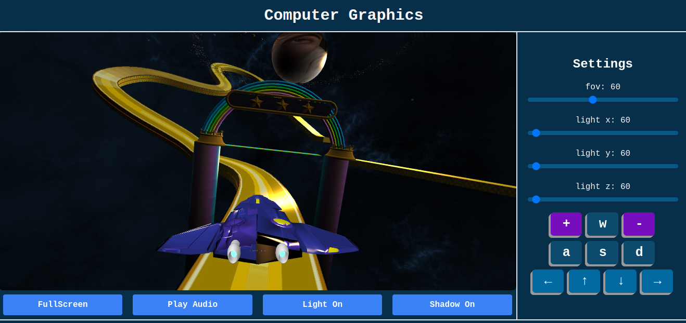
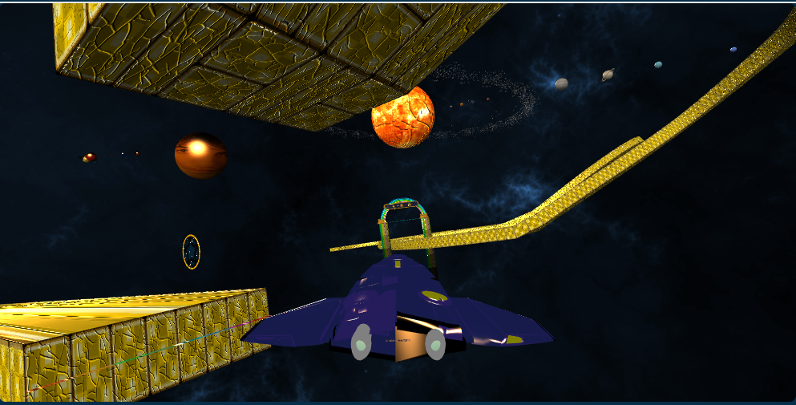

Introduzione
Questo progetto è stato sviluppato per l'esame di "Computer Graphics A.A. 2023/2024". L'obiettivo è di
progettare ed implementare un'applicazione 3D interattiva usando WebGL (HTML5, CSS e contesto webgl), linguaggio
JavaScript e OpenGL.
La scena è stata sviluppata con l'obiettivo di realizzare una navicella in grado di muoversi in tutte le
direzioni tra i pianeti e una pista.
Tutti gli oggetti sono stata implementati usando Blender e poi importati in formato
.obj
Interfaccia
L'interfaccia dell'applicazione è composta da due parti, il canvas per la visualizzazione 3D e una colonna con i
comandi per l'utente, in cui sono disegnati dei pulsanti per muoversi nello spazio.

I movimenti nella scena possono essere gestiti attraverso la tastiera o i bottoni presenti.
- W per andare avanti
- S per andare indietro
- A per andare a sinistra
- D per andare a destra
- + per aumentare la velocita'
- - per abbassare la velocita'
- ↑ per muoversi verso l'alto
- ↓ per muoversi verso il basso
- ← per ruotare verso sinistra
- → per ruotare verso destra
Struttura del progetto
All'interno della repository sono presenti i seguenti file:
- doc: è la repository contenente la documentazione del progetto.
- project : è la repository che contiene i file utilizzati per la realizzazione del
progetto ed è strutturata nel seguente modo:
- libs: contiene le diverse librerie utilizzate
- assets: è organizzata in sottocartelle contenenti i file dei modelli mesh
realizzati. In ogni sottocartella è presente il file .obj che rappresenta la geometria
dell'oggetto e il file .mtl che contiene le informazioni delle texture e dei materiali
applicati all'oggetto.
- utils: è una cartella che contiene la gestione degli eventi utilizzati per la
realizzazione del progetto.
- js: è una cartella che contiene gli script utili per il caricamento e la gestione dei modelli.
- index.css: è il foglio di stile utilizzato per la realizzazione
dell'interfaccia grafica.
- index.html: è il file principale del progetto, che contiene la struttura HTML e
il collegamento a tutti i file javascript e fogli di stile.
- index.js: è il file principale nel quale viene gestito il canvas 3D e caricati i
modelli mesh.
Utility - directory utils
La directory
utils contiene i file utilizzati per la gestione degli eventi.
I file che lo compongono sono:
- audio.js: si occupa di attivare e disattivare l'audio.
- fullscreen.js: gestisce la modalita' fullscreen.
- handleButton.js: gestisce i bottoni interattivi.
- light.js: gestisce le luci.
- bump.js: gestisce il bump mapping.
JS - directory js
La directory
js contiene i file utilizzati per il caricamento e la gestione del modello, fondamentale per il funzionamento.
I file che lo compongono sono:
- editObj.js: si occupa di modificare le forme e la posizione degli object.
- handleKey.js: gestisce gli input da tastiera.
- loadObj.js: carica gli obj e gestisce gli mtl di esso.
- shaders.js: contiene i vertex e i fragment shaders .
- tangent.js: gestisce le tangenti applicate all'oggetto dei modelli.
- texture.js: crea delle semplici texture.
Index - file index.js
Contiene la funzione
loadModel che si occupa dell'intera gestione e del rendering degli oggetti, richiamando tutte le funzioni utili
definite nella cartella
js.
Feature opzionali
Nell'interfaccia sono presenti anche altre feature opzionali, come ad esempio la modalita' fullscreen, per entrare a pieno nel canvas, e l'audio per un atmosfera differente.
E' possibile attivare e disattivare le luci per visualizzare gli oggetti senza colori.
Rendering avanzato
La tecnica di rending avanzato è il bump mapping, attivabile tramite il bottone
Bump.
Alla texture che ricopre l'oggetto viene "sovrapposta" una seconda texture che il motore di rendering utilizza per simulare sporgenze.
Per implementare il bump mapping, è necessario associare la mappa di altezza al materiale della superficie.
Quando la luce colpisce la superficie durante il processo di rendering,
si tiene conto delle informazioni fornite per calcolare in modo realistico la riflessione della luce sulla superficie.
 Rendering con bump mapping
Riferimenti
WebGL Fundamentals: Loading .obj
with Mtl
WebGL Fundamentals: Shadows
Torna all’indice